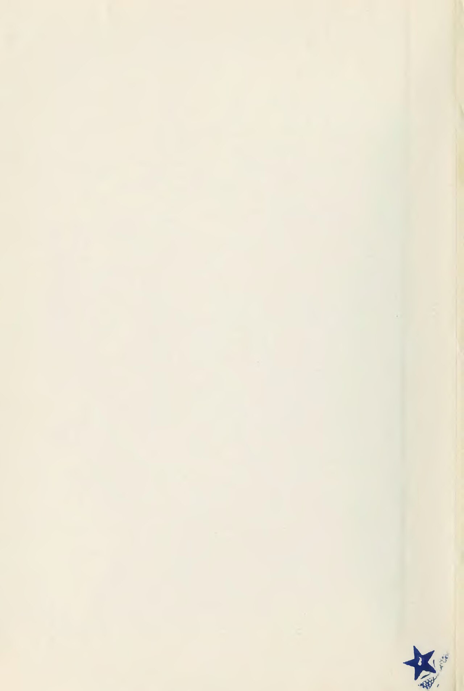

CityLoop Quest — Tropéa


Bien avant les cartes postales, le promontoire de Tropéa surveillait déjà une côte fréquentée par les navigateurs. Les environs ont livré des traces d’occupation antique, et les sources romaines situent dans cette zone des mouillages reliés aux routes de la mer Tyrrhénienne. À Formicoli, plus au sud, un port et des installations côtières témoignent des échanges entre l’arrière-pays agricole et les navires.
Une tradition fait d’Hercule le fondateur de la ville. L’histoire est impossible à démontrer, mais elle a laissé une marque durable, jusqu’au nom de Piazza Ercole. Une autre étymologie rapproche Tropéa du grec « tropaia », le trophée, ou d’un monument célébrant une victoire. Ces hypothèses disent surtout combien la cité a cherché ses origines dans le monde classique.
À l’époque romaine, la région se trouvait sur le passage des flottes. En 36 avant notre ère, les forces d’Octavien et de Sextus Pompée s’affrontèrent dans les eaux de l’Italie méridionale. Le littoral calabrais n’était donc pas une périphérie oubliée, mais un espace stratégique entre la Sicile, Naples et la Méditerranée occidentale.
Le centre perché s’est développé pour profiter d’une défense naturelle. Les rues étroites, les passages et les maisons serrées réduisaient l’exposition aux attaques, tandis que les belvédères permettaient de surveiller l’horizon. Au-dessous, plages et petits mouillages assuraient le lien avec la mer.
Cette naissance progressive explique pourquoi Tropéa ne possède pas un forum antique intact ou une fondation datée d’un seul jour. La ville est un empilement : récits grecs, réseaux romains, fortifications médiévales et demeures modernes se répondent sur le même rocher.